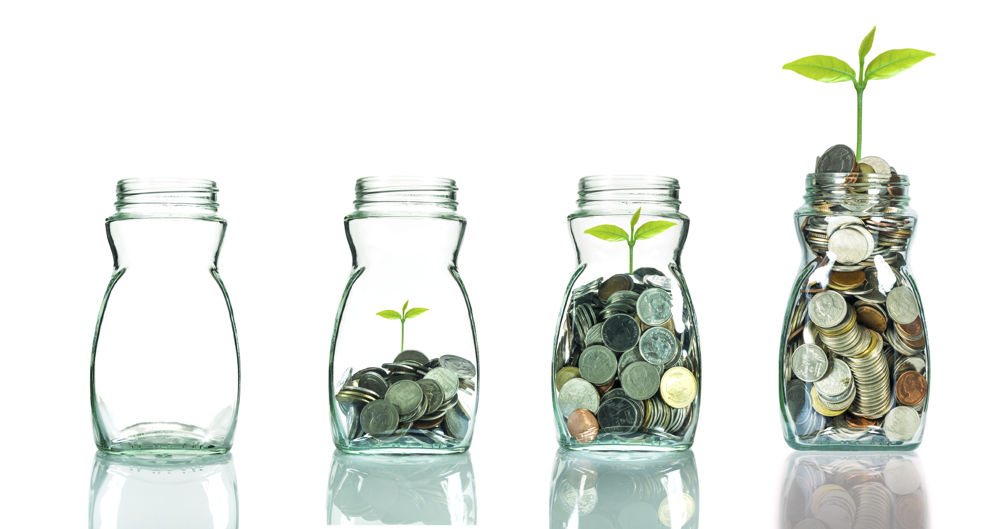

Investing is important, however before buying a stock, bond, or money market fund there are some things you should do.
Live Within Your Means:
It makes no sense to invest if you have to go into debt to do it. Make sure that your expenses do not exceed your income.
Emergency Savings:
You should have some savings for emergencies. Most experts recommend 3-6 months of expenses as a good figure to shoot for.
Eliminate Credit Card Balances:
The average credit card charges about 17% for interest if you carry a balance. That is more than you can reasonably expect from the stock market over the long term. It is usually a better use of your money to pay off credit card debt than to invest.
Adequate Insurance Protection:
Don't skimp on insurance so that you can invest. Make sure all of your insurance needs are met.
Buy a Home:
Buying the home you live in is one of the best investments you can make. If you are in a position to do so, buy a home before you start investing in stocks. A good money market or short-term bond fund could be used to save for a down payment.
Investment Goals:

Make sure to decide what your investment goals are before you start investing. Having a goal gives you an idea what your time frame is and will provide an incentive to invest.